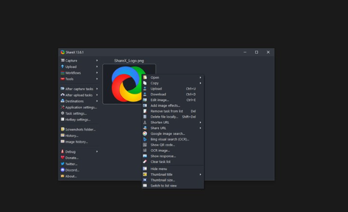

← トップページへ戻る
ShareX
ShareXは無料で利用できる高機能なスクリーンショット・画面録画ソフトです。
画面の一部や全体を簡単にキャプチャできるだけでなく、画像編集やアップロード機能も備えています。
サイト運営やブログ作成、仕事のマニュアル作成などに便利な定番ツールです。
スクリーンショット

できること
- スクリーンショットの撮影
- 画面の範囲指定キャプチャ
- 画面録画（GIF作成）
- 画像への文字入れや編集
- 撮影後の自動保存
おすすめな人
- ブログやサイトを運営している人
- 仕事でマニュアルを作る人
- 画面共有や説明資料を作る人
- 高機能なキャプチャソフトを探している人
良い点
- 完全無料で利用できる
- スクリーンショット機能が非常に豊富
- 作業効率を上げる自動化機能がある
気になる点
- 機能が多く初心者には少し複雑
- 最初は設定項目の多さに戸惑うことがある
ダウンロード先
公式サイトから無料でダウンロードできます。
公式サイトを開く
総評
★★★★★
スクリーンショットを頻繁に利用する人には非常におすすめのソフトです。
機能が豊富で慣れるまで少し時間はかかりますが、一度使いこなせるようになると作業効率が大きく向上します。
更新日：2026-06-23
← トップページへ戻る